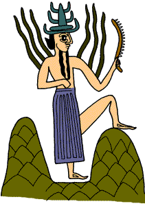

The Challenge -
Shamash in the city of Sippar

Shamash lived in Sippar. When the god got up in the morning, life started again. He opened the eastern door of heaven and began his daily journey. Slowly he climbed up towards heaven, and looked at all living things, from the most important to the humblest. During his travels Shamash crossed all the seas and visited all countries. He had no difficulties overseas as he understood all languages. At the highest point in the sky Shamash became the god of justice and destroyed the wicked but rewarded honest people. He looked after the poor and needy and no secret was hidden from him. Towards the end of twelve hours Shamash opened the western door of heaven and passed through the underworld, where he judged the dead. Then Shamash had his evening meal and went to sleep in his temple at Sippar.
|
|